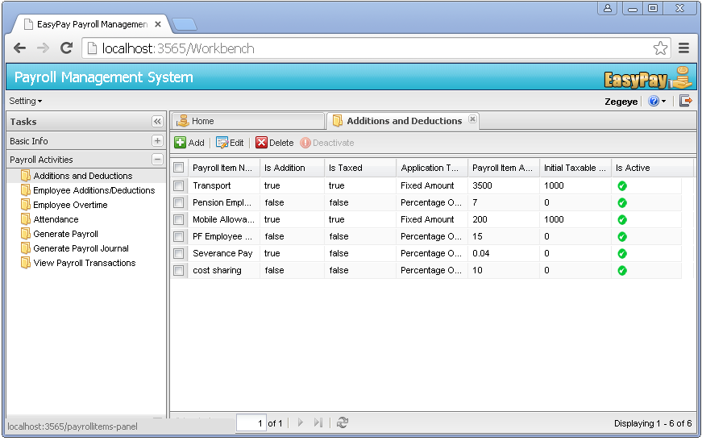
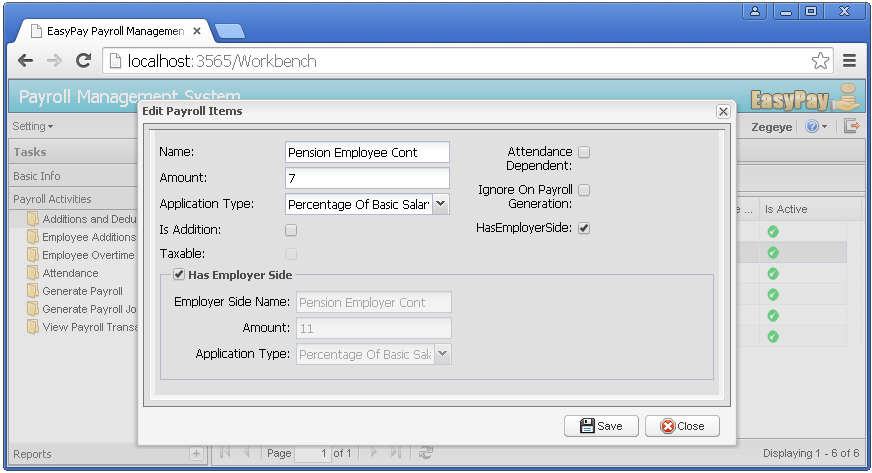

Maintaining Additions and Deductions
What are Additions and Deductions?
EasyPay maintains all types of additions and deductions (the basic inputs for payroll generation) as payroll items. In other words, payroll items are essentially the column names that are going to appear on pay sheets and slips. These payroll items will be assigned to employees based on entitlement later in a process called Employees Additions/Deductions Attachment.
Adding new Addition/Deduction
Once logged in using the PUA, to add a new Addition/Deduction follow the following steps.
Click on the Payroll Activities menu -> Click on the Addition/Deduction sub menu -> a new Addition/Deduction management page will be displayed as follows.

click on the Add button -> a new window will pop up -> Add data on all the mandatory fields and -> then click on Save. A new Addition/Deduction is now added to the database.

Editing existing Addition/Deduction
Click on the Payroll Activities menu -> Click on the Addition/Deduction sub menu -> Select or click on a particular Addition/Deduction from the Addition/Deduction grid -> then click on the Edit button -> a new window with details of the existing record will pop up -> after making all the necessary changes, then click on the save button.
Removing Addition/Deduction
Select or click on a particular Addition/Deduction from the Addition/Deduction grid -> then click on the Delete button -> the system displays a dialog box inquiring the user to confirm his actions. If user selects "YES", the system will automatically remove the Addition/Deduction from the database. If user selects "NO", the system halts the process of removing the Addition/Deduction from the database.